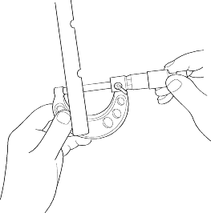
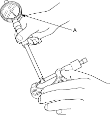
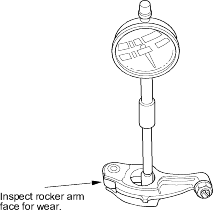
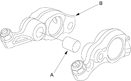

- Measure the diameter of the shaft at the first rocker location.

- Zero the gauge (A) to the shaft diameter.

- Measure the inside diameter of the rocker arm and check it for an out-of-round condition.
Rocker Arm-to-Shaft Clearance:
Standard (New):
Intake:0.017 - 0.050 mm
(0.0007 - 0.0020 in.)
Exhaust:0.018 - 0.054 mm
(0.0007 - 0.0021 in.)
Service Limit:0.08 mm (0.003 in.)

- Repeat for all rockers and both shafts. If the clearance is over the limit, replace the rocker shaft and all overtolerance rocker arms. If any VTEC intake rocker arm needs replacement, replace rocker arms (primary and secondary as a set set).
- Inspect the synchronising piston (A). Push it manually. If it does not move smoothly, replace the rocker arm assembly(D16V1, D16V3 engines).
NOTE:
- When reassembling the primary rocker arm (B), carefully apply air pressure to its oil passage.
- Apply oil to the pistons when reassembling.
